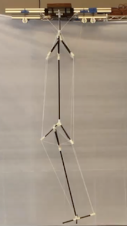
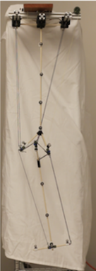

- Victoria Ly
- Status: Graduate Student Researcher
- Discipline: Bio-inspired Robotics
- Active groups:
- Snake Inspired Tensegrity
- Lower Extremity Inspired Tensegrity
- Braingeneers
Description of Research
Designing a flexible tensegrity-inspired robotic snake integrated with artificial intelligence (AI), computer vision (CV) and machine learning (ML). Within the Braingeneers I work on the in-well "microscope" as well as the pumps.

Publications
Bio-inspired Tensegrity Flexural Joints

Authors
Erik Jung, Victoria Ly, Nicholas Cessna, Lawrence Ngo, Dennis Castro, Vytas SunSpiral and Mircea Teodorescu
Abstract
This paper proposes a prototype tensegrity flexural joint, which has a kinematic behavior inspired by a human knee. The paper presents the predicted and actual motion of several prototype knee designs during knee flexion. Most robotics literature views the human knee as a revolute joint or as a ball and socket joint, which have limited range of rotation. A knee design which considers the hybrid (flexible-rigid) structure of the knee would be able to better approximate real knee behavior and hopefully lead to a better design of artificial (prosthetic) knees. More...
Knee-inspired Tensegrity Flexural Joint

Authors
Erik Jung, Victoria Ly, Dennis Castro, and Mircea Teodorescu
Abstract
This paper proposes a prototype tensegrity flexural joint, which has a kinematic behavior inspired by a human knee. The paper presents the predicted and actual motion of several prototype knee designs during knee flexion. Most robotics literature views the human knee as a revolute joint or as a ball and socket joint, which have limited range of rotation. A knee design which considers the hybrid (flexible-rigid) structure of the knee would be able to better approximate real knee behavior and hopefully lead to a better design of artificial (prosthetic) knees. More...